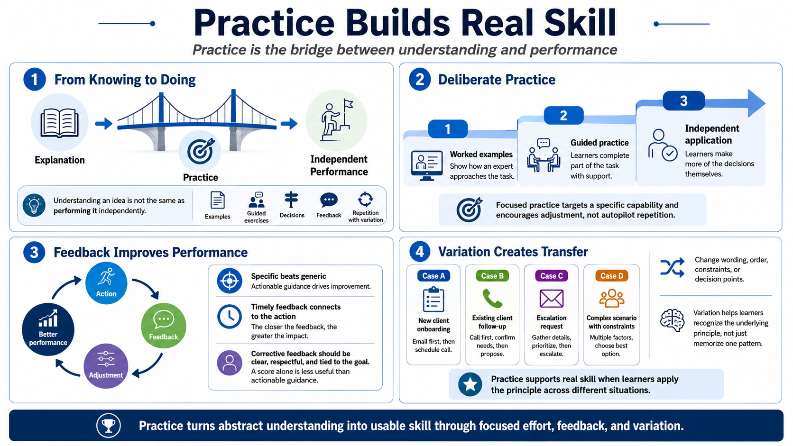

Practice and Feedback
Connecting to LMS... Progress: in progress

Narration
Practice is the bridge between knowing about something and being able to do it. A learner may understand an explanation and still struggle when asked to perform the task independently. That gap is normal. Performance grows when learners see examples, try guided exercises, make decisions, receive feedback, correct mistakes, and repeat the work with variation. Practice turns abstract understanding into usable skill.
Deliberate practice is focused practice with a clear target. It is not repeating easy tasks on autopilot. It asks the learner to work on a specific capability, notice the result, and adjust. Worked examples help early in learning because they show how an experienced person approaches the task. Guided exercises then let learners complete part of the work with support. Independent application comes later, when learners are ready to make more of the decisions themselves.
Feedback is most useful when it helps learners improve, not merely when it judges them. A score can tell someone how they did, but specific feedback tells them what to adjust and why. Timely feedback is easier to connect to the action that produced it. Corrective feedback should be clear, respectful, and tied to the performance goal. The message is not simply, that was wrong. The message is, here is the difference between the current approach and the stronger approach, and here is how to close the gap.
Variation keeps practice from becoming memorized theater. If every exercise uses the same wording, same order, and same obvious clue, learners may pass the activity without recognizing the idea elsewhere. Changing examples, constraints, or decision points helps learners separate the underlying principle from the surface features of the practice item. That is where practice begins to support real skill.